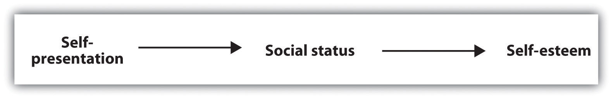

Matthew “Matt” Harding (born September 27, 1976) is an American video game developer who became an Internet celebrity as a result of his viral videos that show him dancing in front of landmarks and street scenes in cities around the world.
Matt began his career working for a video game store and as an editor for a video game magazine. He then became a video game software developer but eventually became frustrated with the work of creating video games. He quit his job and began traveling.
While he was traveling in Vietnam, he had his traveling companion video him as he danced in a city. The video was uploaded to YouTube. Matt then made a second video, a sequence of 15 dance scenes in other countries, each accompanied by background music. This video eventually became viral, getting over 20,000 hits a day as it was discovered around the world.
Harding released his third dancing video, the result of 14 months of traveling in 42 countries, on June 20, 2008.
(click to see video)
Watch Matt dance.
At the foundation of all human behavior is the selfOur sense of personal identity and of who we are as individuals.—our sense of personal identity and of who we are as individuals. Because an understanding of the self is so important, it has been studied for many years by psychologists (James, 1890; Mead, 1934)James, W. (1890). The principles of psychology. New York, NY: Dover; Mead, G. H. (1934). Mind, self, and society. Chicago, IL: The University of Chicago Press. and is still one of the most important and most researched topics in social psychology (Dweck & Grant, 2008; Taylor & Sherman, 2008).Dweck, C. S., & Grant, H. (2008). Self-theories, goals, and meaning. In J. Y. Shah, W. L. Gardner, J. Y. E. Shah, & W. L. E. Gardner (Eds.), Handbook of motivation science (pp. 405–416). New York, NY: Guilford Press; Taylor, S. E., & Sherman, D. K. (2008). Self-enhancement and self-affirmation: The consequences of positive self-thoughts for motivation and health. In J. Y. Shah, W. L. Gardner, J. Y. E. Shah, & W. L. E. Gardner (Eds.), Handbook of motivation science (pp. 57–70). New York, NY: Guilford Press. Social psychologists conceptualize the self using the basic principles of social psychology—that is, the relationship between individual persons and the people around them (the person-situation interaction) and the ABCs of social psychology—the affective, behavioral, and cognitive components of the self.
In this chapter, we will first consider the cognitive aspects of the self, focusing on the self-concept (the thoughts that we hold about ourselves) and self-awareness (the extent to which we are currently fixing our attention on our own self-concept). Then we will move on to the role of affect, considering self-esteem (the positive or negative feelings that we have about ourselves) and the many ways that we try to gain positive self-esteem. Finally, we will consider the social aspects of the self, including how we present ourselves to others in order to portray a positive self-image, as well as the many ways that our thoughts and feelings about ourselves are determined by our relationships with others.
Some nonhuman animals, including chimpanzees, orangutans, and perhaps dolphins, have at least a primitive sense of self (Boysen & Himes, 1999).Boysen, S. T., & Himes, G. T. (1999). Current issues and emerging theories in animal cognition. Annual Review of Psychology, 50, 683–705. We know this because of some interesting experiments that have been done with animals. In one study (Gallup, 1970),Gallup, G. G., Jr. (1970). Chimpanzees: self-recognition. Science, 167, 86–87. researchers painted a red dot on the forehead of anesthetized chimpanzees and then placed the animals in a cage with a mirror. When the chimps woke up and looked in the mirror, they touched the dot on their faces, not the dot on the faces in the mirror. This action suggests that the chimps understood that they were looking at themselves and not at other animals, and thus we can assume that they are able to realize that they exist as individuals. Most other animals, including dogs, cats, and monkeys, never realize that it is themselves they see in a mirror.
Infants who have similar red dots painted on their foreheads recognize themselves in a mirror in the same way that the chimps do, and they do this by about 18 months of age (Asendorpf, Warkentin, & Baudonnière, 1996; Povinelli, Landau, & Perilloux, 1996).Asendorpf, J. B., Warkentin, V., & Baudonnière, P-M. (1996). Self-awareness and other-awareness. II: Mirror self-recognition, social contingency awareness, and synchronic imitation. Developmental Psychology, 32(2), 313–321; Povinelli, D. J., Landau, K. R., & Perilloux, H. K. (1996). Self-recognition in young children using delayed versus live feedback: Evidence of a developmental asynchrony. Child Development, 67(4), 1540–1554. The child’s knowledge about the self continues to develop as the child grows. By age 2, the infant becomes aware of his or her gender as a boy or a girl. At age 4, self-descriptions are likely to be based on physical features, such as one’s hair color, and by about age 6, the child is able to understand basic emotions and the concepts of traits, being able to make statements such as “I am a nice person” (Harter, 1998).Harter, S. (1998). The development of self-representations. In W. Damon & N. Eisenberg (Eds.), Handbook of child psychology: Social, emotional, & personality development (5th ed., Vol. 3, pp. 553–618). New York, NY: John Wiley & Sons.
By the time they are in grade school, children have learned that they are unique individuals, and they can think about and analyze their own behavior. They also begin to show awareness of the social situation—they understand that other people are looking at and judging them the same way that they are looking at and judging others (Doherty, 2009).Doherty, M. J. (2009). Theory of mind: How children understand others’ thoughts and feelings. New York, NY: Psychology Press.
Part of what is developing in children as they grow is the fundamental cognitive part of the self, known as the self-concept. The self-conceptA knowledge representation that contains knowledge about us, including our beliefs about our personality traits, physical characteristics, abilities, values, goals, and roles, as well as the knowledge that we exist as individuals. is a knowledge representation that contains knowledge about us, including our beliefs about our personality traits, physical characteristics, abilities, values, goals, and roles, as well as the knowledge that we exist as individuals. Throughout childhood and adolescence, the self-concept becomes more abstract and complex and is organized into a variety of different cognitive aspects, known as self-schemasOne of the many organized cognitive aspects of the self-concept.. Children have self-schemas about their progress in school, their appearance, their skills at sports and other activities, and many other aspects, and these self-schemas direct and inform their processing of self-relevant information (Harter, 1999).Harter, S. (1999). The construction of the self: A developmental perspective. New York, NY: Guilford Press.
By the time we are adults, our sense of self has grown dramatically. In addition to possessing a wide variety of self-schemas, we can analyze our thoughts, feelings, and behaviors, and we can see that other people may have different thoughts than we do. We become aware of our own mortality. We plan for the future and consider the potential outcomes of our actions. At times, having a sense of self may seem unpleasant—when we are not proud of our appearance, actions, or relationships with others, or when we think about and become afraid of the possibility of our own death. On the other hand, the ability to think about the self is very useful. Being aware of our past and able to speculate about the future is adaptive—it allows us to modify our behavior on the basis of our mistakes and to plan for future activities. When we do poorly on an exam, for instance, we may study harder for the next one or even consider changing our major if we continue to have problems in the major we have chosen.
One way to learn about a person’s self-concept and the many self-schemas that it contains is by using self-report measures. One of these is a deceptively simple fill-in-the-blank measure that has been used by many scientists to get a picture of the self-concept (Rees & Nicholson, 1994).Rees, A., & Nicholson, N. (1994). The Twenty Statements Test. In C. Cassell & G. Symon (Eds.), Qualitative methods in organizational research: A practical guide (pp. 37–54). Thousand Oaks, CA: Sage Publications. All of the 20 items in the measure are exactly the same, but the person is asked to fill in a different response for each statement. This self-report measure, known as the Twenty Statements Test, can reveal a lot about a person because it is designed to measure the most accessible—and thus the most important—parts of one’s self-concept. Try it for yourself, at least five times:
Although each person has a unique self-concept, we can identify some characteristics that are common across the responses given by different people on the measure. Physical characteristics are an important component of the self-concept, and they are mentioned by many people when they describe themselves. If you’ve been concerned lately that you’ve been gaining weight, you might write, “I am overweight.” If you think you’re particularly good looking (“I am attractive”), or if you think you’re too short (“I am too short”), those things might have been reflected in your responses. Our physical characteristics are important to our self-concept because we realize that other people use them to judge us. People often list the physical characteristics that make them different from others in either positive or negative ways (“I am blond,” “I am short”), in part because they understand that these characteristics are salient and thus likely to be used by others when judging them (McGuire, McGuire, Child, & Fujioka, 1978).McGuire, W. J., McGuire, C. V., Child, P., & Fujioka, T. (1978). Salience of ethnicity in the spontaneous self-concept as a function of one’s ethnic distinctiveness in the social enviornment. Journal of Personality and Social Psychology, 36, 511–520.
A second characteristic of the self-concept reflects our memberships in the social groups that we belong to and care about. Common responses in this regard include such ones as “I am an artist,” “I am Jewish,” and “I am a student at Augsburg College.” As we will see later in this chapter, our group memberships form an important part of the self-concept because they provide us with our social identity—the sense of our self that involves our memberships in social groups.
The remainder of the self-concept is normally made up of personality traits—the specific and stable personality characteristics that describe an individual (“I am friendly,” “I am shy,” “I am persistent”). These individual differences (the person part of the person-situation interaction) are important determinants of our behavior, and this aspect of the self-concept reflects this variation across people.
The self-concept is a rich and complex social representation. In addition to our thoughts about who we are right now, the self-concept includes thoughts about our past self—our experiences, accomplishments, and failures—and about our future self—our hopes, plans, goals, and possibilities (Oyserman, Bybee, Terry, & Hart-Johnson, 2004).Oyserman, D., Bybee, D., Terry, K., & Hart-Johnson, T. (2004). Possible selves as roadmaps. Journal of Research in Personality, 38(2), 130–149. The self-concept also includes thoughts about our relationships with others. You no doubt have thoughts about your family and close friends that have become part of yourself. Indeed, if you don’t see the people you really care about for a while, or if you should lose them in one way or another, you will naturally feel sad because you are in essence missing part of yourself.
Although every human being has a complex self-concept, there are nevertheless individual differences in self-complexityThe extent to which individuals have many different and relatively independent ways of thinking about themselves., the extent to which individuals have many different and relatively independent ways of thinking about themselves (Linville, 1987; Roccas & Brewer, 2002).Linville, P. W. (1987). Self-complexity as a cognitive buffer against stress-related illness and depression. Journal of Personality and Social Psychology, 52(4), 663–676; Roccas, S., & Brewer, M. (2002). Social identity complexity. Personality and Social Psychology Review, 6(2), 88–106. Some selves are more complex than others, and these individual differences can be important in determining psychological outcomes. Having a complex self means that we have a lot of different ways of thinking about ourselves. For example, imagine a woman whose self-concept contains the social identities of student, girlfriend, daughter, psychology major, and tennis player and who has encountered a wide variety of life experiences. Social psychologists would say that she has high self-complexity. On the other hand, a man who perceives himself solely as a student or solely as a member of the hockey team and who has had a relatively narrow range of life experiences would be said to have low self-complexity. For those with high self-complexity, the various self-aspects of the self are separate, such that the positive and negative thoughts about a particular self-aspect do not spill over into thoughts about other aspects.
Research has found that compared with people low in self-complexity, those higher in self-complexity experience more positive outcomes. People with more complex self-concepts have been found to have lower levels of stress and illness (Kalthoff & Neimeyer, 1993),Kalthoff, R. A., & Neimeyer, R. A. (1993). Self-complexity and psychological distress: A test of the buffering model. International Journal of Personal Construct Psychology, 6(4), 327–349. a greater tolerance for frustration (Gramzow, Sedikides, Panter, & Insko, 2000),Gramzow, R. H., Sedikides, C., Panter, A. T., & Insko, C. A. (2000). Aspects of self-regulation and self-structure as predictors of perceived emotional distress. Personality and Social Psychology Bulletin, 26, 188–205. and more positive and less negative reactions to events that they experience (Niedenthal, Setterlund, & Wherry, 1992).Niedenthal, P. M., Setterlund, M. B., & Wherry, M. B. (1992). Possible self-complexity and affective reactions to goal-relevant evaluation. Journal of Personality and Social Psychology, 63(1), 5–16.
The benefits of self-complexity occur because the various domains of the self help to buffer us against negative events and help us to enjoy the positive events that we experience. For people low in self-complexity, negative outcomes on one aspect of the self tend to have a big impact on their self-esteem. If the only thing that Maria cares about is getting into medical school, she may be devastated if she fails to make it. On the other hand, Marty, who is also passionate about medical school but who has a more complex self-concept, may be better able to adjust to such a blow by turning to other interests. People with high self-complexity can also take advantage of the positive outcomes that occur on any of the dimensions that are important to them.
Although having high self-complexity seems useful overall, it does not seem to help everyone equally and also does not seem to help us respond to all events equally (Rafaeli-Mor & Steinberg, 2002).Rafaeli-Mor, E., & Steinberg, J. (2002). Self-complexity and well-being: A review and research synthesis. Personality and Social Psychology Review, 6, 31–58. The benefits of self-complexity seem to be particularly strong on reactions to positive events. People with high self-complexity seem to react more positively to the good things that happen to them but not necessarily less negatively to the bad things. And the positive effects of self-complexity are stronger for people who have other positive aspects of the self as well. This buffering effect is stronger for people with high self-esteem, whose self-complexity involves positive rather than negative characteristics (Koch & Shepperd, 2004),Koch, E. J., & Shepperd, J. A. (2004). Is self-complexity linked to better coping? A review of the literature. Journal of Personality, 72(4), 727–760. and for people who feel that they have control over their outcomes (McConnell et al., 2005).McConnell, A. R., Renaud, J. M., Dean, K. K., Green, S. P., Lamoreaux, M. J., Hall, C. E.,…Rydel, R. J. (2005). Whose self is it anyway? Self-aspect control moderates the relation between self-complexity and well-being. Journal of Experimental Social Psychology, 41(1), 1–18. doi: 10.1016/j.jesp.2004.02.004
Because the self-concept is a schema, it can be studied using the methods that we would use to study any other schema. As we have seen, one approach is to use self-report—for instance, by asking people to list the things that come to mind when they think about themselves. Another approach is to use neuroimaging to directly study the self in the brain. As you can see in Figure 4.1, neuroimaging studies have shown that information about the self is stored in the prefrontal cortex, the same place that other information about people is stored (Barrios et al., 2008).Barrios, V., Kwan, V. S. Y., Ganis, G., Gorman, J., Romanowski, J., & Keenan, J. P. (2008). Elucidating the neural correlates of egoistic and moralistic self-enhancement. Consciousness and Cognition: An International Journal, 17(2), 451–456. This finding suggests that we store information about ourselves as people the same way we store information about others.
Figure 4.1

This figure shows the areas of the human brain that are known to be important in processing information about the self. They include primarily areas of the prefrontal cortex (areas 1, 2, 4, and 5). Data are from Lieberman (2010).Lieberman, M. D. (2010). Social cognitive neuroscience. In S. T. Fiske, D. T. Gilbert, & G. Lindzey (Eds.), Handbook of social psychology (5th ed., Vol. 1, pp. 143–193). Hoboken, NJ: John Wiley & Sons.
Still another approach to studying the self is to investigate how we attend to and remember things that relate to the self. Indeed, because the self-concept is the most important of all our schemas, it has extraordinary influence on our thoughts, feelings, and behavior. Have you ever been at a party where there was a lot of noise and bustle, and yet you were surprised to discover that you could easily hear your own name being mentioned in the background? Because our own name is such an important part of our self-concept, and because we value it highly, it is highly accessible. We are very alert for, and react quickly to, the mention of our own name.
Other research has found that information that is related to the self-schema is better remembered than information that is unrelated to it, and that information related to the self can also be processed very quickly (Lieberman, Jarcho, & Satpute, 2004).Lieberman, M. D., Jarcho, J. M., & Satpute, A. B. (2004). Evidence-based and intuition-based self-knowledge: An fMRI study. Journal of Personality and Social Psychology, 87(4), 421–435. In one classic study that demonstrated the importance of the self-schema, Rogers, Kuiper, and Kirker (1977)Rogers, T. B., Kuiper, N. A., & Kirker, W. S. (1977). Self-reference and the encoding of personal information. Journal of Personality and Social Psychology, 35(9), 677–688. conducted an experiment to assess how college students recalled information that they had learned under different processing conditions. All the participants were presented with the same list of 40 adjectives to process, but through the use of random assignment, the participants were given one of four different sets of instructions about how to process the adjectives.
Participants assigned to the structural task condition were asked to judge whether the word was printed in uppercase or lowercase letters. Participants in the phonemic task condition were asked whether or not the word rhymed with another given word. In the semantic task condition, the participants were asked if the word was a synonym of another word. And in the self-reference task condition, participants indicated whether or not the given adjective was or was not true of themselves. After completing the specified task, each participant was asked to recall as many adjectives as he or she could remember.
Figure 4.2 The Self-Reference Effect

The chart shows the proportion of adjectives that students were able to recall under each of four learning conditions. The same words were recalled significantly better when they were processed in relation to the self than when they were processed in other ways. Data from Rogers et al. (1977).Rogers, T. B., Kuiper, N. A., & Kirker, W. S. (1977). Self-reference and the encoding of personal information. Journal of Personality and Social Psychology, 35(9), 677–688.
Rogers and his colleagues hypothesized that different types of processing would have different effects on memory. As you can see in Figure 4.2 "The Self-Reference Effect", the students in the self-reference task condition recalled significantly more adjectives than did students in any other condition. The finding that information that is processed in relationship to the self is particularly well remembered, known as the self-reference effectThe ability to well remember information that relates to the self., is powerful evidence that the self-concept helps us organize and remember information. The next time you are studying for an exam, you might try relating the material to your own experiences—the self-reference effect suggests that doing so will help you better remember the information.
Like any other schema, the self-concept can vary in its current cognitive accessibility. Self-awarenessThe extent to which we are currently fixing our attention on our own self-concept. refers to the extent to which we are currently fixing our attention on our own self-concept. When the self-concept becomes highly accessible because of our concerns about being observed and potentially judged by others, we experience the publicly induced self-awareness known as self-consciousnessSelf-awareness as a result of our concerns about being observed and potentially judged by others. (Duval & Wicklund, 1972; Rochat, 2009).Duval, S., & Wicklund, R. A. (1972). A theory of objective self-awareness. New York, NY: Academic Press; Rochat, P. (2009). Others in mind: Social origins of self-consciousness. New York, NY: Cambridge University Press.
I am sure that you can remember times when your self-awareness was increased and you became self-conscious—for instance, when you were giving a class presentation and you were perhaps painfully aware that everyone was looking at you, or when you did something in public that embarrassed you. Emotions such as anxiety and embarrassment occur in large part because the self-concept becomes highly accessible, and they serve as a signal to monitor and perhaps change our behavior.
Not all aspects of our self-concepts are equally accessible at all times, and these long-term differences in the accessibility of the different self-schemas help create individual differences, for instance, in terms of our current concerns and interests. You may know some people for whom the physical appearance component of the self-concept is highly accessible. They check their hair every time they see a mirror, worry whether their clothes are making them look good, and do a lot of shopping—for themselves, of course. Other people are more focused on their social group memberships—they tend to think about things in terms of their role as Christians or as members of the tennis team. Think back for a moment to the opener of this chapter and consider Dancing Matt Harding. What do you think are his most highly accessible self-schemas?
In addition to variation in long-term accessibility, the self and its various components may also be made temporarily more accessible through priming. We become more self-aware when we are in front of a mirror, when a TV camera is focused on us, when we are speaking in front of an audience, or when we are listening to our own tape-recorded voice (Kernis & Grannemann, 1988).Kernis, M. H., & Grannemann, B. D. (1988). Private self-consciousness and perceptions of self-consistency. Personality and Individual Differences, 9(5), 897–902. When the knowledge contained in the self-schema becomes more accessible, it also becomes more likely to be used in information processing and more likely to influence our behavior.
Beaman, Klentz, Diener, and Svanum (1979)Beaman, A. L., Klentz, B., Diener, E., & Svanum, S. (1979). Self-awareness and transgression in children: Two field studies. Journal of Personality and Social Psychology, 37(10), 1835–1846. conducted a field experiment to see if self-awareness would influence children’s honesty. The researchers expected that most children viewed stealing as wrong but that they would be more likely to act on this belief when they were more self-aware. They conducted this experiment on Halloween evening in homes within the city of Seattle. When children who were trick-or-treating came to particular houses, they were greeted by one of the experimenters, shown a large bowl of candy, and were told to take only one piece each. The researchers unobtrusively watched each child to see how many pieces he or she actually took.
Behind the candy bowl in some of the houses was a large mirror. In the other houses, there was no mirror. Out of the 363 children who were observed in the study, 19% disobeyed instructions and took more than one piece of candy. However, the children who were in front of a mirror were significantly less likely to steal (14.4%) than were those who did not see a mirror (28.5%). These results suggest that the mirror activated the children’s self-awareness, which reminded them of their belief about the importance of being honest. Other research has shown that being self-aware has a powerful influence on other behaviors as well. For instance, people are more likely to stay on their diets, eat better foods, and act more morally overall when they are self-aware (Baumeister, Zell, & Tice, 2007; Heatherton, Polivy, Herman, & Baumeister, 1993).Baumeister, R. F., Zell, A. L., & Tice, D. M. (2007). How emotions facilitate and impair self-regulation. In J. J. Gross & J. J. E. Gross (Eds.), Handbook of emotion regulation (pp. 408–426). New York, NY: Guilford Press; Heatherton, T. F., Polivy, J., Herman, C. P., & Baumeister, R. F. (1993). Self-awareness, task failure, and disinhibition: How attentional focus affects eating. Journal of Personality, 61, 138–143. What this means is that when you are trying to stick to a diet, study harder, or engage in other difficult behaviors, you should try to focus on yourself and the importance of the goals you have set.
Social psychologists are interested in studying self-awareness because it has such an important influence on behavior. People lose their self-awareness and become more likely to violate acceptable social norms when, for example, they put on a Halloween mask or engage in other behaviors that hide their identities. The members of the militant White supremacist organization the Ku Klux Klan wear white robes and hats when they meet and when they engage in their racist behavior. And when people are in large crowds, such as in a mass demonstration or a riot, they may become so much a part of the group that they lose their individual self-awareness and experience deindividuationThe loss of self-awareness and individual accountability in groups.—the loss of self-awareness and individual accountability in groups (Festinger, Pepitone, & Newcomb, 1952; Zimbardo, 1969).Festinger, L., Pepitone, A., & Newcomb, B. (1952). Some consequences of deindividuation in a group. Journal of Abnormal and Social Psychology, 47, 382–389; Zimbardo, P. (1969). The human choice: Individuation, reason and order versus deindividuation impulse and chaos. In W. J. Arnold & D. Levine (Eds.), Nebraska Symposium of Motivation (Vol. 17). Lincoln, NE: University of Nebraska Press.
Two particular types of individual differences in self-awareness have been found to be important, and they relate to self-concern and other-concern, respectively (Fenigstein, Scheier, & Buss, 1975; Lalwani, Shrum, & Chiu, 2009).Fenigstein, A., Scheier, M. F., & Buss, A. H. (1975). Public and private self-consciousness: Assessment and theory. Journal of Consulting and Clinical Psychology, 43, 522–527; Lalwani, A. K., Shrum, L. J., & Chiu, C.-Y. (2009). Motivated response styles: The role of cultural values, regulatory focus, and self-consciousness in socially desirable responding. Journal of Personality and Social Psychology, 96, 870–882. Private self-consciousnessThe tendency to introspect about our inner thoughts and feelings. refers to the tendency to introspect about our inner thoughts and feelings. People who are high in private self-consciousness tend to think about themselves a lot and agree with statements such as “I’m always trying to figure myself out” and “I am generally attentive to my inner feelings.” People who are high on private self-consciousness are likely to base their behavior on their own inner beliefs and values—they let their inner thoughts and feelings guide their actions—and they may be particularly likely to strive to succeed on dimensions that allow them to demonstrate their own personal accomplishments (Lalwani, Shrum & Chiu, 2009).Lalwani, A. K., Shrum, L. J., & Chiu, C-Y. (2009). Motivated response styles: The role of cultural values, regulatory focus, and self-consciousness in socially desirable responding. Journal of Personality and Social Psychology, 96, 870–882.
Public self-consciousnessThe tendency to focus on our outer public image and to be particularly aware of the extent to which we are meeting the standards set by others., in contrast, refers to the tendency to focus on our outer public image and to be particularly aware of the extent to which we are meeting the standards set by others. Those high in public self-consciousness agree with statements such as “I’m concerned about what other people think of me,” “Before I leave my house, I check how I look,” and “I care a lot about how I present myself to others.” These are the people who check their hair in a mirror they pass and spend a lot of time getting ready in the morning; they are more likely to let the opinions of others (rather than their own opinions) guide their behaviors and are particularly concerned with making good impressions on others.
Research has found cultural differences in public self-consciousness, such that people from East Asian collectivistic cultures have higher public self-consciousness than do people from Western individualistic cultures. Steve Heine and his colleagues (Heine, Takemoto, Moskalenko, Lasaleta, & Henrich, 2008)Heine, S. J., Takemoto, T., Moskalenko, S., Lasaleta, J., & Henrich, J. (2008). Mirrors in the head: Cultural variation in objective self-awareness. Personality and Social Psychology Bulletin, 34(7), 879–887. found that when college students from Canada (a Western culture) completed questionnaires in front of a large mirror, they subsequently became more self-critical and were less likely to cheat (much like the trick-or-treaters we discussed earlier) than were Canadian students who were not in front of a mirror. However, the presence of the mirror had no effect on college students from Japan. This person-situation interaction is consistent with the idea that people from East Asian cultures are normally already high in public self-consciousness, in comparison with people from Western cultures, and thus manipulations designed to increase public self-consciousness are less influential for them.
Although the self-concept is the most important of all our schemas, and although people (particularly those high in self-consciousness) are aware of their self and how they are seen by others, this does not mean that people are always thinking about themselves. In fact, people do not generally focus on their self-concept any more than they focus on the other things and other people in their environments (Csikszentmihalyi & Figurski, 1982).Csikszentmihalyi, M., & Figurski, T. J. (1982). Self-awareness and aversive experience in everyday life. Journal of Personality, 50(1), 15–28.
On the other hand, self-awareness is more powerful for the person experiencing it than it is for others who are looking on, and the fact that self-concept is so highly accessible frequently leads people to overestimate the extent to which other people are focusing on them (Gilovich & Savitsky, 1999).Gilovich, T., & Savitsky, K. (1999). The spotlight effect and the illusion of transparency: Egocentric assessments of how we are seen by others. Current Directions in Psychological Science, 8(6), 165–168. Although you may be highly self-conscious about of something you’ve done in a particular situation, that does not mean that others are necessarily paying all that much attention to you. Research by Thomas Gilovich and his colleagues (Gilovich, Medvec, & Savitsky, 2000)Gilovich, T., Medvec, V. H., & Savitsky, K. (2000). The spotlight effect in social judgment: An egocentric bias in estimates of the salience of one’s own actions and appearance. Journal of Personality and Social Psychology, 78(2), 211–222. found that people who were interacting with others thought that other people were paying much more attention to them than those other people reported actually doing.
Teenagers are particularly likely to be highly self-conscious, often believing that others are constantly watching them (Goossens, Beyers, Emmen, & van Aken, 2002).Goossens, L., Beyers, W., Emmen, M., & van Aken, M. (2002). The imaginary audience and personal fable: Factor analyses and concurrent validity of the “new look” measures. Journal of Research on Adolescence, 12(2), 193–215. Because teens think so much about themselves, they are particularly likely to believe that others must be thinking about them, too (Rycek, Stuhr, McDermott, Benker, & Swartz, 1998).Rycek, R. F., Stuhr, S. L., McDermott, J., Benker, J., & Swartz, M. D. (1998). Adolescent egocentrism and cognitive functioning during late adolescence. Adolescence, 33, 746–750. It is no wonder that everything a teen’s parents do suddenly feels embarrassing to them when they are in public.
People also often mistakenly believe that their internal states show to others more than they really do. Gilovich, Savitsky, and Medvec (1998)Gilovich, T., Savitsky, K., & Medvec, V. H. (1998). The illusion of transparency: Biased assessments of others’ ability to read one’s emotional states. Journal of Personality and Social Psychology, 75(2), 332–346. asked groups of five students to work together on a “lie detection” task. One at a time, each student stood up in front of the others and answered a question that the researcher had written on a card (e.g., “I have met David Letterman”). On each round, one person’s card indicated that they were to give a false answer, whereas the other four were told to tell the truth.
Figure 4.3 The Illusion of Transparency
After each round, the students who had not been asked to lie indicated which of the students they thought had actually lied in that round, and the liar was asked to estimate the number of other students who would correctly guess who had been the liar. As you can see in Figure 4.3 "The Illusion of Transparency", the liars overestimated the detectability of their lies: On average, they predicted that over 44% of their fellow players had known that they were the liar, but in fact only about 25% were able to accurately identify them. Gilovitch and his colleagues called this effect the “illusion of transparency.”
Although the self is partly determined by our thoughts about ourselves, we are also the product of our emotions. I am certain that Matt Harding dances, at least in part, because he likes dancing and because dancing makes him feel good. In fact, we all want to feel positively about ourselves, and we work hard to be able to do so.
Self-esteemThe positive or negative evaluations that we make of ourselves. refers to the positive (high self-esteem) or negative (low self-esteem) feelings that we have about ourselves. We experience the positive feelings of high self-esteem when we believe that we are good and worthy and that others view us positively. We experience the negative feelings of low self-esteem when we believe that we are inadequate and less worthy than others.
Our self-esteem is determined by many factors, including how well we view our own performance, our own appearance, and how satisfied we are with our relationships with other people (Tafarodi & Swann, 1995).Tafarodi, R. W., & Swann, W. B., Jr. (1995). Self-liking and self-competence as dimensions of global self-esteem: Initial validation of a measure. Journal of Personality Assessment, 65(2), 322–342. Self-esteem is in part a trait that is stable over time, such that some people have relatively high self-esteem and others have lower self-esteem. But our self-esteem is also a state that varies day to day and even hour to hour. When we have succeeded at an important task, when we have done something that we think is useful or important, or when we feel that we are accepted and valued by others, our self-concept will contain many positive thoughts and we will therefore have high self-esteem. When we have failed, done something harmful, or feel that we have been ignored or criticized, the negative aspects of the self-concept are more accessible and we experience low self-esteem.
Self-esteem can be measured using both explicit and implicit measures, and both approaches find that people tend to view themselves positively. One common self-report measure of self-esteem is the Rosenberg Self-Esteem Scale. Higher numbers on the scale indicate higher self-esteem, and the average score for college students who complete the scale is about 3 on a 1 to 4 scale, demonstrating that by and large, people have high self-esteem.
Please rate yourself on the following items by writing a number in the blank before each statement, where you
1 = Strongly Disagree 2 = Disagree 3 = Agree 4 = Strongly Agree
Note. (R) denotes an item that should be reverse scored. Subtract your response on these items from 5 before calculating the total. Data are from Rosenberg (1965).Rosenberg, M. (1965). Society and the adolescent self-image. Princeton, NJ: Princeton University Press.
One problem with measures such as the Rosenberg scale is that they can be influenced by the desire to portray the self positively. The observed scores on the Rosenberg scale are likely inflated because people naturally try to make themselves look as if they have very high self-esteem—maybe they fib a bit to make themselves look better than they really are to the experimenters and perhaps also to make themselves feel better.
More indirect measures of self-esteem have been created—measures that may provide a more accurate picture of the self-concept because they are less influenced by the desire to make a positive impression. Anthony Greenwald and Shelly Farnham (2000)Greenwald, A. G., & Farnham, S. D. (2000). Using the Implicit Association Test to measure self-esteem and self-concept. Journal of Personality and Social Psychology, 79(6), 1022–1038. used the Implicit Association Test to study the self-concept indirectly. Participants worked at a computer and were presented with a series of words, each of which they were to categorize in one of two ways. One categorization decision involved whether the words were related to the self (e.g., me, myself, mine) or to another person (other, them, their). A second categorization decision involved determining whether words were pleasant (joy, smile, pleasant) or unpleasant (pain, death, tragedy).
On some trials, the self words were paired with the pleasant items, and the other words with the unpleasant items. On other trials, the self words were paired with the unpleasant items, and the other words with the pleasant items. Greenwald and Farnham found that on average, participants were significantly faster at categorizing positive words that were presented with self words than they were at categorizing negative words that were presented with self words, suggesting, again, that people did have positive self-esteem. Furthermore, there were also meaningful differences among people in the speed of responding, suggesting that the measure captured individual variation in self-esteem.
Brett Pelham and his colleagues (Jones, Pelham, Mirenberg, & Hetts, 2002; Koole & Pelham, 2003; Pelham, Carvallo, & Jones, 2005)Jones, J. T., Pelham, B. W., Mirenberg, M. C., & Hetts, J. J. (2002). Name letter preferences are not merely mere exposure: Implicit egotism as self-regulation. Journal of Experimental Social Psychology, 38(2), 170–177; Koole, S. L., & Pelham, B. W. (Eds.). (2003). On the nature of implicit self-esteem: The case of the name letter effect. Mahwah, NJ: Lawrence Erlbaum Associates; Pelham, B. W., Carvallo, M., & Jones, J. T. (2005). Implicit egotism. Current Directions in Psychological Science, 14, 106–110. have taken still another approach to assessing self-esteem indirectly, by measuring a concept that they call implicit egoism. In their research, they have found that people prefer things that are associated with their own names to things that are not associated with their own names. More specifically, people prefer their own initials to the initials of other people, and prefer other people who share their initials to those who don’t. And Brendl, Chattopadhyay, Pelham, and Carvallo (2005)Brendl, C. M., Chattopadhyay, A., Pelham, B. W., & Carvallo, M. (2005). Name letter branding: Valence transfers when product specific needs are active. Journal of Consumer Research, 32, 405–416. found similar results for brand names, such that people are more likely to choose a brand when the brand name starts with letters from their names than when the brand name does not. Thus these indirect measures also came to the same conclusion that the direct measures do—most people have positive self-esteem in the sense that they regard themselves, and things associated with themselves, positively.
Because it is so important to have self-esteem, we naturally try to get and maintain it. One way is to be successful at what we do. When we get a good grade on a test, perform well in a sports match, or get a date with someone that we really like, our self-esteem naturally rises. One reason that most people have positive self-esteem is because we are generally successful at creating positive lives. When we fail in one domain, we tend to move on until we find something that we are good at. Most of us realize that we cannot hang out with the most attractive person on campus, and so we generally don’t set ourselves up for failure by trying to. We don’t always expect to get the best grade on every test or to be the best player on the team. Therefore, we are not surprised or that hurt when those things don’t happen. In short, we feel good about ourselves because we do a pretty good job at creating decent lives.
Processing Information to Enhance the Self
Although we are all quite good at creating positive self-esteem by doing positive things, it turns out that we do not stop there. The desire to see ourselves positively is strong enough that it leads us to seek out, process, and remember information in a way that allows us to see ourselves even more positively.
Sanitioso, Kunda, and Fong (1990)Sanitioso, R., Kunda, Z., & Fong, G. T. (1990). Motivated recruitment of autobiographical memories. Journal of Personality and Social Psychology, 59(2), 229–241. had students from Princeton University read about a study that they were told had been conducted by psychologists at Stanford University (the study was actually fictitious). The students were randomly assigned to two groups, such that one group read that the results of the research had showed that extroverts did better than introverts in academic or professional settings after graduating from college, while the other group read that introverts did better than extroverts on the same dimensions. The students then wrote explanations for why this might be true.
The experimenter then thanked the participants and led them to another room, where a second study was to be conducted (you will have guessed already that although the participants did not think so, the two experiments were really part of the same experiment). In the “second” experiment, participants were given a questionnaire that supposedly was investigating what different personality dimensions meant to people in terms of their own experience and behavior. The students were asked to list behaviors that they had performed in the past that related to the dimension of “shy” versus “outgoing”—a dimension that is very close in meaning to the introversion-extroversion dimension that they had read about in the first experiment.
The following figure shows the number of students in each condition who listed an extroverted behavior first, and the number who listed an introverted behavior first. You can see that the first memory listed by participants in both conditions tended to reflect the dimension that they had read was related to success according to the research presented in the first experiment. In fact, 62% of the students who had just learned that extroversion was related to success listed a memory about an extroverted behavior first, whereas only 38% of the students who had just learned that introversion was related to success listed an extroverted behavior first.
Figure 4.4 Enhancing the Self

Sanitioso, Kunda, and Fong (1990)Sanitioso, R., Kunda, Z., & Fong, G. T. (1990). Motivated recruitment of autobiographical memories. Journal of Personality and Social Psychology, 59(2), 229–241. found that students who had learned that extroverts did better than introverts after graduating from college tended to list extroverted memories about themselves, whereas those who learned that introverts did better than extroverts tended to list introverted memories.
It appears that the participants drew from their memories those instances of their own behavior that reflected the trait that had the most positive implications for their self-esteem—either introversion or extroversion, depending on experimental condition. The desire for positive self-esteem made events that were consistent with a positive self-perception more accessible, and thus they were listed first on the questionnaire.
Other research has confirmed this general principle—people attempt to create positive self-esteem whenever possible, even it if may involve distorting reality. We take credit for our successes, and we blame our failures on others. We remember our positive experiences, and we tend to forget the negative ones. We judge our likelihood of success and happiness as greater than our likelihood of failure and unhappiness. We think that our sense of humor and our honesty are above average, and that we are better drivers and less prejudiced than others. We also distort (in a positive way, of course) our memories of our grades, our performances on exams, and our romantic experiences. And we believe that we can control the events that we will experience to a greater extent than we really can (Crocker & Park, 2004).Crocker, J., & Park, L. E. (2004). The costly pursuit of self-esteem. Psychological Bulletin, 130, 392–414.
Although self-esteem comes in part from our personal accomplishments, it is also influenced by the social situation. Positive self-esteem occurs not only when we do well in our own eyes but also when we feel that we are positively perceived by the other people we care about. Think about Dancing Matt as an example—he may love to dance for himself, but he also seems to enjoy sharing his dancing with others. Perhaps Matt feels good about himself in part because he knows that other people like to watch him. Social statusThe extent to which we are viewed positively and esteemed by others. refers to the extent to which we are viewed positively and are esteemed by others.
Because it is so important to be seen as competent and productive members of society, people naturally attempt to present themselves as positively as they can to others. We attempt to convince others that we are good and worthy people by appearing attractive, strong, intelligent, and likable and by saying positive things to others (Jones & Pittman, 1982; Leary, 1995; Schlenker, 2003).Jones, E. E., & Pittman, T. S. (1982). Toward a general theory of strategic self-presentation. In J. Suls (Ed.), Psychological perspectives on the self (Vol 1, pp. 231–262). Hillsdale, NJ: Erlbaum; Leary, M. R. (1995). Self-presentation: Impression management and interpersonal behavior. Madison, WI: Brown & Benchmark Publishers; Schlenker, B. R. (2003). Self-presentation. In M. R. Leary, J. P. Tangney, M. R. E. Leary, & J. P. E. Tangney (Eds.), Handbook of self and identity (pp. 492–518). New York, NY: Guilford Press. The tendency to present a positive self-image to others, with the goal of increasing our social status, is known as self-presentationThe tendency to portray a positive self-image to others, with the goal of increasing our social status., and it is a basic and natural part of everyday life. Again, the dynamic interplay between the person and the situation is apparent—our individual self-esteem is influenced in large part by how we think others perceive us.
One way to self-present is to display our positive physical characteristics. The reason that so many of us spend money on teeth whiteners, hair dye, face-lifts, and fashion accessories of every sort is in part the result of the desire to self-present—we want to look good to others so that they will like us. We can also earn status by collecting expensive possessions such as fancy cars and big houses and by trying to associate with high-status others. And we may also gain status by attempting to dominate or intimidate others in social interaction. People who talk more and louder and those who initiate more social interactions are afforded higher status. A businessman who greets others with a strong handshake and a smile and people who speak out strongly for their opinions in group discussions may be attempting to do so as well. In some cases, people may even resort to aggressive behavior, such as bullying, in attempts to improve their status (Baumeister, Smart, & Boden, 1996).Baumeister, R. F., Smart, L., & Boden, J. M. (1996). Relation of threatened egotism to violence and aggression: The dark side of high self-esteem. Psychological Review, 103(1), 5–34.
You might not be surprised to hear that men and women use different approaches to self-presentation. Men are more likely to present themselves in an assertive way, by speaking and interrupting others, by visually focusing on the other person when they are speaking, and by leaning their bodies into the conversation. Women, on the other hand, are more likely to be modest—they tend to create status by laughing and smiling, and by reacting more positively to the statements of others (Dovidio, Brown, Heltman, Ellyson, & Keation, 1988).Dovidio, J. F., Brown, C. E., Heltman, K., Ellyson, S. L., & Keation, C. F. (1988). Power displays between women and men in discussions of gender linked tasks: A multichannel study. Journal of Personality and Social Psychology, 55, 580–587.
These gender differences are probably in large part socially determined as a result of the different reinforcements that men and women receive for using self-presentational strategies. Speaking out and acting assertively is more effective for men than it is for women because our stereotypes about the appropriate behavior for women do not include assertive behavior. Women who act assertively may be seen negatively because they violate our expectations about appropriate behavior. In fact, because self-presenting in an assertive way is not as effective for women, it can be difficult for women to gain power in organizations (Carli, 2001).Carli, L. L. (2001). Gender and social influence. Journal of Social Issues, 57(4), 725–741. But the observed gender differences in self-presentation are also due in part to the presence of testosterone, which is higher in men. Both women and men with more testosterone are more assertive (Baker, Pearcey, & Dabbs, 2002; Dabbs, Hargrove, & Heusel, 1996).Baker, L. A., Pearcey, S. M., & Dabbs, J. M., Jr. (2002). Testosterone, alcohol, and civil and rough conflict resolution strategies in lesbian couples. Journal of Homosexuality, 42(4), 77–88; Dabbs, J. M., Jr., Hargrove, M. F., & Heusel, C. (1996). Testosterone differences among college fraternities: Well-behaved vs. rambunctious. Personality and Individual Differences, 20(2), 157–161.
Different self-presentation strategies may be used to create different emotions in other people, and the use of these strategies may be evolutionarily selected because they are successful (Kessler & Cohrs, 2008).Kessler, T., & Cohrs, J. C. (2008). The evolution of authoritarian processes: Fostering cooperation in large-scale groups. Group Dynamics: Theory, Research, and Practice, 12, 73–84. Edward Jones and Thane Pittman (1982)Jones, E. E., & Pittman, T. S. (1982). Toward a general theory of strategic self-presentation. In J. Suls (Ed.), Psychological perspectives on the self (Vol 1, pp. 231–262). Hillsdale, NJ: Erlbaum. described five self-presentation strategies, each of which is expected to create a resulting emotion in the other person.
No matter who is using it, self-presentation can easily be overdone, and when it is, it backfires. People who overuse the ingratiation technique and who are seen as obviously and strategically trying to impress or get others to like them are not liked. Nor are people who exemplify or self-promote by boasting or bragging, particularly if that boasting does not appear to reflect their true characteristics (Wosinska, Dabul, Whetstone-Dion, & Cialdini, 1996).Wosinska, W., Dabul, A. J., Whetstone-Dion, R., & Cialdini, R. B. (1996). Self-presentational responses to success in the organization: The costs and benefits of modesty. Basic and Applied Social Psychology, 18(2), 229–242. And using intimidation is also likely to backfire—acting more modestly may often be more effective. Again, the point is clear—we may want to self-promote with the goal of getting others to like us, but we must also be careful to take into consideration the point of view of the other person as well.
Figure 4.5
We use self-presentation to try to convince others that we are good and worthy people. When we are successful in our self-presentation and other people view us positively, we have high social status. When we perceive that we have high social status, we experience positive self-esteem.
In summary, although the variables of self-esteem, social status, and self-presentation are separate concepts with different meanings, they all are related, as you can see in Figure 4.5. We feel good about ourselves (we have high self-esteem) when we have high social status. And we can gain status by convincing other people that we are good people (self-presentation). Because these concepts are important parts of everyday life, we will return to them frequently throughout this book.
Although the desire to present the self favorably is a natural part of everyday life, both person and situation factors influence the extent to which we do it. For one, we are more likely to self-present in some situations than in others. When we are applying for a job or meeting with others whom we need to impress, we naturally become more attuned to the social aspects of the self, and our self-presentation increases.
And there are also individual differences. Some people are naturally better at self-presentation—they enjoy doing it and are good at it—whereas others find self-presentation less desirable or more difficult. An important individual-difference variable known as self-monitoring has been shown, in hundreds of studies, to have a major impact on self-presentation. Self-monitoringThe tendency to be both motivated and capable of regulating our behavior to meet the demands of social situations. refers to the tendency to be both motivated and capable of regulating our behavior to meet the demands of social situations (Gangestad & Snyder, 2000). Gangestad, S. W., & Snyder, M. (2000). Self-monitoring: Appraisal and reappraisal. Psychological Bulletin, 126(4), 530–555. High self-monitors are particularly good at reading the emotions of others and therefore are better at fitting into social situations—they agree with statements such as “In different situations and with different people, I often act like very different persons” and “I guess I put on a show to impress or entertain people.” Low self-monitors, on the other hand, generally act on their own attitudes, even when the social situation suggests that they should behave otherwise. Low self-monitors are more likely to agree with statements such as “At parties and social gatherings, I do not attempt to do or say things that others will like” and “I can only argue for ideas that I already believe.” In short, high self-monitors try to get other people to like them by behaving in ways that the others find desirable (they are good self-presenters), whereas low self-monitors do not.
In one experiment that showed the importance of self-monitoring, Cheng and Chartrand (2003)Cheng, C. M., & Chartrand, T. L. (2003). Self-monitoring without awareness: Using mimicry as a nonconscious affiliation strategy. Journal of Personality and Social Psychology, 85(6), 1170–1179. had college students interact individually with another student (actually an experimental confederate) whom they thought they would be working with on an upcoming task. While they were interacting, the confederate subtly touched her own face several times, and the researchers recorded the extent to which the student participant mimicked the confederate by also touching his or her own face.
The situational variable was the status of the confederate. Before the meeting began, and according to random assignment to conditions, the students were told either that they would be the leader and that the other person would be the worker on the upcoming task, or vice versa. The person variable was self-monitoring, and each participant was classified as either high or low on self-monitoring on the basis of his or her responses to the self-monitoring scale.
Figure 4.6

High self-monitors imitated more when the person they were interacting with was of higher (versus lower) status. Low self-monitors were not sensitive to the status of the other. Data are from Cheng and Chartrand (2003).Cheng, C. M., & Chartrand, T. L. (2003). Self-monitoring without awareness: Using mimicry as a nonconscious affiliation strategy. Journal of Personality and Social Psychology, 85(6), 1170–1179.
As you can see in Figure 4.6, Cheng and Chartrand found an interaction effect: The students who had been classified as high self-monitors were more likely to mimic the behavior of the confederate when she was described as being the leader than when she was described as being the worker, indicating that they were “tuned in” to the social situation and modified their behavior to appear more positively. Although the low self-monitors did mimic the other person, they did not mimic her more when the other was high, versus low, status. This finding is quite consistent with the idea that the high self-monitors were particularly aware of the other person’s status and attempted to self-present more positively to the high-status leader. The low self-monitors, on the other hand—because they feel less need to impress overall—did not pay much attention to the other person’s status.
Our discussion to this point suggests that people will generally try to view themselves in the most positive possible light and to present themselves to others as favorably as they can. We emphasize our positive characteristics, and we may even in some cases distort information—all to help us maintain positive self-esteem.
There is a negative aspect to having too much self-esteem, however, at least when the esteem is unrealistic and undeserved. NarcissismA personality trait characterized by overly high self-esteem, self-admiration, and self-centeredness. is a personality trait characterized by overly high self-esteem, self-admiration, and self-centeredness. Narcissists agree with statements such as the following:
People do not normally like narcissists because they are unrealistic and think only of themselves. Narcissists make bad romantic partners—they behave selfishly and are always ready to look for someone else who they think will be a better mate, and they are likely to be unfaithful (Campbell & Foster, 2002; Campbell, Rudich, & Sedikides, 2002).Campbell, W. K., & Foster, C. A. (2002). Narcissism and commitment in romantic relationships: An investment model analysis. Personality and Social Psychology Bulletin, 28, 484–495; Campbell, W. K., Rudich, E., & Sedikides, C. (2002). Narcissism, self-esteem, and the positivity of self-views: Two portraits of self-love. Personality and Social Psychology Bulletin, 28, 358–368. Narcissists may also be obnoxious, continually interrupting and bullying others, and they may respond very negatively to criticism. Although they make positive first impressions, people eventually see narcissists less positively than narcissists see themselves, in part because they are perceived as arrogant. Perhaps surprisingly, narcissists seem to understand these things about themselves, although they engage in the behaviors anyway (Carlson, Vazire, & Oltmanns, 2011).Carlson, E. N., Vazire, S., & Oltmanns, T. F. (2011). You probably think this paper’s about you: Narcissists’ perceptions of their personality and reputation. Journal of Personality and Social Psychology, 101(1), 185–201.
Does High Self-Esteem Cause Happiness or Other Positive Outcomes?
Teachers, parents, school counselors, and people in general frequently assume that high self-esteem causes many positive outcomes for people who have it and therefore that we should try to increase it in ourselves and others. Perhaps you agree with the idea that if you could increase your self-esteem, you would feel better about yourself and therefore be able to study harder, get better grades, or attract a more desirable mate. If you do believe that, you would not be alone. In 1986, the state of California funded a task force under the premise that raising self-esteem would help solve many of the state’s problems, including crime, teen pregnancy, drug abuse, school underachievement, and pollution.
Roy Baumeister and his colleagues (Baumeister, Campbell, Krueger, & Vohs, 2003)Baumeister, R. F., Campbell, J. D., Krueger, J. I., & Vohs, K. D. (2003). Does high self-esteem cause better performance, interpersonal success, happiness, or healthier lifestyles? Psychological Science in the Public Interest, 4(1), 1–44. recently conducted an extensive review of the research literature to determine whether having high self-esteem was as helpful as many people seem to think it is. They began by assessing which variables were correlated with high self-esteem and then considered the extent to which high self-esteem caused these outcomes.
Baumeister and his colleagues found that high self-esteem does correlate with many positive outcomes. People with high self-esteem get better grades, are less depressed, feel less stress, and may even live longer than those who view themselves more negatively. The researchers also found that high self-esteem was correlated with greater initiative and activity, such that high self-esteem people just did more things. People with high self-esteem are more likely to be bullies, but they are also more likely to defend victims against bullies, compared with people with low self-esteem. People with high self-esteem are more likely to initiate interactions and relationships. They are more likely to speak up in groups and to experiment with alcohol, drugs, and sex. High self-esteem people also work harder in response to initial failure and are more willing to switch to a new line of endeavor if the present one seems unpromising. Thus having high self-esteem seems to be a valuable resource—people with high self-esteem are happier, more active, and in many ways better able to deal with their environment.
On the other hand, Baumeister and his colleagues also found that people with high self-esteem may sometimes delude themselves. High self-esteem people believe that they are more likable and attractive, have better relationships, and make better impressions on others than people with low self-esteem. But objective measures show that these beliefs are often distortions rather than facts. Furthermore, people with overly high self-esteem, particularly when it is accompanied by narcissism, defensiveness, conceit, and the unwillingness to critically assess one’s potential negative qualities, have been found to engage in a variety of negative behaviors (Baumeister, Smart, & Boden, 1996).Baumeister, R. F., Smart, L., & Boden, J. M. (1996). Relation of threatened egotism to violence and aggression: The dark side of high self-esteem. Psychological Review, 103(1), 5–34.
Todd Heatherton and Kathleen Vohs (2000)Heatherton, T. F., & Vohs, K. D. (2000). Interpersonal evaluations following threats to self: Role of self-esteem. Journal of Personality and Social Psychology, 78, 725–736. found that when people with extremely high self-esteem were forced to fail on a difficult task in front of a partner, they responded by acting more unfriendly, rudely, and arrogantly than did students with lower self-esteem. And research has found that children who inflate their social self-worth—those who think that they are more popular than they really are and who thus have unrealistically high self-esteem—are also more aggressive than the children who do not show such narcissistic tendencies (Sandstrom & Herlan, 2007; Thomaes, Bushman, Stegge, & Olthof, 2008).Sandstrom, M. J., & Herlan, R. D. (2007). Threatened egotism or confirmed inadequacy? How children’s perceptions of social status influence aggressive behavior toward peers. Journal of Social and Clinical Psychology, 26(2), 240–267; Thomaes, S., Bushman, B. J., Stegge, H., & Olthof, T. (2008). Trumping shame by blasts of noise: Narcissism, self-esteem, shame, and aggression in young adolescents. Child Development, 79(6), 1792–1801. If you are thinking like a social psychologist, these findings may not surprise you—narcissists are all about self-concern, with little concern for others, and we have seen many times that other-concern is a necessity for satisfactory social relations.
Despite the many positive variables that relate to high self-esteem, when Baumeister and his colleagues looked at the causal role of self-esteem is they found little evidence that high self-esteem caused these positive outcomes. For instance, although high self-esteem is correlated with academic achievement, it is more the result than the cause of this achievement. Programs designed to boost the self-esteem of pupils have not been shown to improve academic performance, and laboratory studies have generally failed to find that manipulations of self-esteem cause better task performance.
In the end then, Baumeister and his colleagues concluded that programs designed to boost self-esteem should be used only in a limited way and should not be the only approach taken. Raising self-esteem will not make young people do better in school, obey the law, stay out of trouble, get along better with other people, or respect the rights of others. And these programs may even backfire, if the increased self-esteem creates narcissism or conceit. Baumeister and his colleagues suggested that attempts to boost self-esteem should only be carried out as a reward for good behavior and worthy achievements, and not simply to try to make children feel better about themselves.
Although we naturally desire to have social status and high self-esteem, we cannot always promote ourselves without any regard to the accuracy of our self-characterizations. If we consistently distort our capabilities, and particularly if we do this over a long period of time, we will just end up fooling ourselves and perhaps engaging in behaviors that are not actually beneficial to us. One of my colleagues has a son in high school who loves to think that he is an incredible golfer who could compete on the professional golf tour with the best golfers in the world. The problem, however, is that he’s actually only a pretty average golfer. His parents are worried about him because although they realize that his high self-esteem might propel him to work harder at this sport, and although he certainly enjoys thinking positively about himself, he may also be setting himself up for long-term failure. How long can he continue to consider himself in this overly positive way before the reality comes crashing down on him that perhaps he really is not cut out for a life on the professional golf circuit and that he should consider doing something else? The hope is that it will not be too late to take up a more reasonable career when he does.
When we promote ourselves too much, although we may feel good about it in the short term, in the longer term the outcomes for the self may not be that positive. The goal of creating and maintaining positive self-esteem (an affective goal) must be tempered by the cognitive goal of having an accurate self-view (Kirkpatrick & Ellis, 2001; Swann, Chang-Schneider, & Angulo, 2007).Kirkpatick, L. A., & Ellis, B. J. (2001). Evolutionary perspectives on self-evaluation and self-esteem. In M. Clark & G. Fletcher (Eds.), The Blackwell Handbook of Social Psychology, Vol. 2: Interpersonal processes (pp. 411–436). Oxford, UK: Blackwell; Swann, W. B., Jr., Chang-Schneider, C., & Angulo, S. (2007). Self-verification in relationships as an adaptive process. In J. Wood, A. Tesser, & J. Holmes (Eds.), Self and relationships. New York, NY: Psychology Press. Although we may prefer to hold highly favorable views of ourselves, more accurate views would almost certainly be more useful because accurate information is likely to lead to better decision making. Indeed, research suggests that people do not only self-enhance; they also desire to be known for who they believe they are, even if what they are is not all good. When people enter into relationships with others who verify their self-views, for example, they feel more intimate with the other person and more are satisfied with the interaction than they do with partners who are always positive toward them (Swann, De La Ronde, & Hixon, 1994; Swann & Pelham, 2002).Swann, W. B., Jr., De La Ronde, C., & Hixon, J. G. (1994). Authenticity and positivity strivings in marriage and courtship. Journal of Personality and Social Psychology, 66, 857–869; Swann, W. B., Jr., & Pelham, B. W. (2002). Who wants out when the going gets good? Psychological investment and preference for self-verifying college roommates. Journal of Self and Identity, 1, 219–233. The desire for self-verifying feedback is so powerful that people who have negative self-esteem may in some cases work to verify those negative views by avoiding positive feedback in favor of negative, but self-verifying, feedback (Swann, Rentfrow, & Guinn, 2002).Swann, W. B., Jr., Rentfrow, P. J., & Guinn, J. (2002). Self-verification: The search for coherence. In M. Leary & J. Tangney (Eds.), Handbook of self and identity. New York: Guilford Press.
In some cases, the cognitive goal of obtaining an accurate picture of ourselves and our social world and the affective goal of gaining positive self-esteem work hand in hand. Getting the best grade in the class on an important exam produces accurate knowledge about our skills in the domain as well as giving us some positive self-esteem. In other cases, the two goals are incompatible. Doing more poorly on an exam than we had hoped produces conflicting, contradictory outcomes. The poor score provides accurate information about the self—namely, that we have not mastered the subject—but at the same time makes us feel bad. It is in these cases that we must learn to reconcile our self-concept with our self-esteem. We must be able to accept our negative aspects and to work to overcome them. The ability to balance the cognitive and the affective features of the self helps us create efficient and effective behavior.
Jennifer Crocker and Lora Park (2004)Crocker, J., & Park, L. E. (2004). The costly pursuit of self-esteem. Psychological Bulletin, 130, 392–414. have noted still another cost of our attempts to inflate our self-esteem: We may spend so much time trying to enhance our self-esteem in the eyes of others—by focusing on the clothes we are wearing, impressing others, and so forth—that we have little time left to really improve ourselves in more meaningful ways. And in some extreme cases, people experience such strong needs to improve their self-esteem and social status that they act in assertive or dominant ways in order to gain it. As in many other domains, then, having positive self-esteem is a good thing, but we must be careful to temper it with a healthy realism and a concern for others.
To this point, we have argued that human beings have complex and well-developed self-concepts and that they generally attempt to come to view themselves as positively as they can. In this section, we will consider in more detail the social aspects of the self by considering the many ways that the social situation determines our self-concept. Our selves are not created in isolation; we are not born with perceptions of ourselves as shy, interested in jazz, or charitable to others. Rather, these beliefs are determined by our observations of and interactions with others. Are you rich or poor? Beautiful or ugly? Smart or not? Good or poor at video games? And how do you know? These questions can be answered only by comparing ourselves with those around us. The self has meaning only within the social context, and it is not wrong to say that the social situation defines our self-concept and our self-esteem. We rely on others to provide a “social reality”—to help us determine what to think, feel, and do (Hardin & Higgins, 1996).Hardin, C., & Higgins, T. (1996). Shared reality: How social verification makes the subjective objective. In R. M. Sorrentino & E. T. Higgins (Eds.), Handbook of motivation and cognition: Foundations of social behavior (Vol. 3, pp. 28–84). New York, NY: Guilford Press.
The self-concept and self-esteem are determined in large part through the process of social comparison (Buunk & Gibbons, 2007; Van Lange, 2008).Buunk, A. P., & Gibbons, F. X. (2007). Social comparison: The end of a theory and the emergence of a field. Organizational Behavior and Human Decision Processes, 102(1), 3–21; Van Lange, P. A. M. (2008). Social comparison is basic to social psychology. American Journal of Psychology, 121(1), 169–172. Social comparisonThe process of learning about our abilities and skills, about the appropriateness and validity of our opinions, and about our relative social status by comparing our own attitudes, beliefs, and behaviors with those of others. occurs when we learn about our abilities and skills, about the appropriateness and validity of our opinions, and about our relative social status by comparing our own attitudes, beliefs, and behaviors with those of others. These comparisons can be with people that we know and interact with, with those that we read about or see on TV, or with anyone else that we view as important.
Social comparison occurs primarily on dimensions upon which there is no objectively correct answer and thus on which we can rely only on the beliefs of others for information. Answers to questions such as “What should I wear to the formal?” or “What kind of music should I have at my wedding?” are frequently determined at least in part by using the behavior of others as a basis of comparison. We also use social comparison to help us determine our skills or abilities—how good we are at performing a task or doing a job, for example. When a student looks at another student’s paper to see what grade he or she got, or when we join a tennis club to compare our performance and progress with those of others, we are using social comparison to evaluate our abilities.
Affiliation and Social Comparison
The extent to which individuals use social comparison to determine their evaluations of events was demonstrated in a set of classic research studies conducted by Stanley Schachter (1959).Schachter, S. (1959). The psychology of affiliation. Stanford, CA: Stanford University Press. Schachter’s experiments tested the hypothesis that people who were feeling anxious would prefer to affiliate with others rather than be alone because having others around would reduce their anxiety. Female college students at the University of Minnesota volunteered to participate in one of his experiments for extra credit in their introductory psychology class. They arrived at the experimental room to find a scientist dressed in a white lab coat, standing in front of a large array of electrical machinery. The scientist introduced himself as Dr. Zilstein of the Department of Neurology and Psychiatry, and he told the women that they would be serving as participants in an experiment concerning the effects of electrical shock. Dr. Zilstein stressed how important it was to learn about the effects of shocks, since electroshock therapy was being used more and more commonly and because the number of accidents due to electricity was also increasing!
At this point, the experimental manipulation occurred. One half of the participants (those in the high-anxiety condition) were told that the shocks would be “painful” and “intense,” although they were assured that they could do no permanent damage. The other half of the participants (those in the low-anxiety condition) were also told that they would be receiving shocks but that they would in no way be painful—rather, the shocks were said to be mild and to resemble a “tickle” or a “tingle.” Of course, the respondents were randomly assigned to conditions to assure that the women in the two conditions were, on average, equivalent except for the experimental manipulation.
Each of the women was then told that before the experiment could continue, the experimenter would have to prepare the equipment and that they would have to wait for a while until he was finished. He asked them if they would prefer to wait alone or to wait with others. The outcome of Schachter’s research was clear—while only 33% of the women who were expecting mild shocks preferred to wait with others, 63% of the women expecting to get painful shocks wanted to wait with others. This was a statistically significant difference, and Schachter concluded that the women chose to affiliate with each other in order to reduce their anxiety about the upcoming shocks.
In further studies, Schachter found that the research participants who were under stress did not want to wait with just any other people. They preferred to wait with other people who were expecting to undergo the same severe shocks that they were rather than with people who were supposedly just waiting to see their professor. Schachter concluded that this was not just because being around other people might reduce our anxiety but because we also use others who are in the same situation as we are to help us determine how to feel about things. As Schachter (1959) put it, “Misery doesn’t just love any kind of company, it loves only miserable company” (p. 24). In this case, the participants were expecting to determine from the other participants how afraid they should be of the upcoming shocks.
In short, and as predicted by the idea of social comparison, the women in Schachter’s studies relied on each other to help them understand what was happening to them and to find out how they should feel and respond to their social situations. Again, the power of the social situation—in this case, in determining our beliefs and attitudes—is apparent.
Although Schachter’s studies were conducted in relatively artificial lab settings, similar effects have been found in field studies in more naturally occurring settings. For instance, Kulik, Mahler, and Moore (1996)Kulik, J. A., Mahler, H. I. M., & Moore, P. J. (1996). Social comparison and affiliation under threat: Effects on recovery from major surgery. Journal of Personality and Social Psychology, 71(5), 967–979. found that hospital patients who were awaiting surgery preferred to talk to other individuals who were expecting to have similar procedures rather than to patients who were having different procedures, so that they could share information about what they might expect to experience. Furthermore, Kulik and his colleagues found that sharing information was helpful—people who were able to share more information had shorter hospital stays.
Although we use social comparison in part to develop our self-concept—that is, to form accurate conclusions about our attitudes, abilities, and opinions—social comparison has perhaps an even bigger impact on our self-esteem. When we are able to compare ourselves favorably with others, we feel good about ourselves, but when the outcome of comparison suggests that others are better or better off than we are, then our self-esteem is likely to suffer. This is why good students who attend high schools in which the other students are only average may suddenly find their self-esteem threatened when they move on to more selective colleges in which they are no longer better than the other students (Marsh, Kong, & Hau, 2000).Marsh, H. W., Kong, C.-K., & Hau, K-T. (2000). Longitudinal multilevel models of the big-fish-little-pond effect on academic self-concept: Counterbalancing contrast and reflected-glory effects in Hong Kong schools. Journal of Personality and Social Psychology, 78, 337–349. I’m sure you’ve had the experience yourself of the changes in self-esteem that occur when you have moved into a new grade in school, got a new job, or changed your circle of friends. In these cases, you may have felt much better about yourself or much worse, depending on the nature of the change. You can see that in these cases the actual characteristics of the individual person has not changed at all; only the social situation and the comparison others have changed. And yet the social situation can make a big difference in one’s self-esteem.
Because we naturally want to have positive self-esteem, we frequently attempt to compare ourselves positively with others. Downward social comparisonSocial comparison with those we perceive as worse off than we are. occurs when we attempt to create a positive image of ourselves through favorable comparisons with others who are worse off than we are. Morse and Gergen (1970)Morse, S., & Gergen, K. (1970). Social comparison, self-consistency, and the concept of self. Journal of Personality and Social Psychology, 16(1), 148–156. had students apply for a job, and they also presented the students with another individual who was supposedly applying for the same job. When the other candidate was made to appear to be less qualified for the job than they were, the downward comparison with the less qualified applicant made the students feel better about their own qualifications. As a result, the students reported higher self-esteem than they did when the other applicant was seen as a highly competent job candidate. Research has also found that people who are suffering from serious diseases prefer to compare their condition with other individuals whose current condition and likely prognosis is worse than their own (Buunk, Gibbons, & Visser, 2002).Buunk, A. P., Gibbons, F. X., & Visser, A. (2002). The relevance of social comparison processes for prevention and health care. Patient Education and Counseling, 47, 1–3. These comparisons make them feel better about their own possible outcomes.
Although downward comparison provides us with positive feelings, upward social comparisonSocial comparison with those we perceive as better off than we are., which occurs when we compare ourselves with others who are better off than we are, is also possible (Blanton, Buunk, Gibbons, & Kuyper, 1999; Vrugt & Koenis, 2002).Blanton, H., Buunk, B. P., Gibbons, F. X., & Kuyper, H. (1999). When better-than-others compare upward: Choice of comparison and comparative evaluation as independent predictors of academic performance. Journal of Personality and Social Psychology, 76(3), 420–430; Vrugt, A., & Koenis, S. (2002). Perceived self-efficacy, personal goals, social comparison, and scientific productivity. Applied Psychology: An International Review, 51(4), 593–607. Although upward comparison may lower our self-esteem by reminding us that we are not as well off as others, it is useful because it can provide information that can help us do better, help us imagine ourselves as part of the group of successful people that we want to be like (Collins, 2000),Collins, R. L. (2000). Among the better ones: Upward assimilation in social comparison. In J. Suls & L. Wheeler (Eds.), Handbook of social comparison (pp. 159–172). New York, NY: Kulwer Academic/Plenum. and give us hope (Snyder, Cheavens, & Sympson, 1997).Snyder, C., Cheavens, J., & Sympson, S. (1997). Hope: An individual motive for social commerce. Group Dynamics: Theory, Research, and Practice, 1, 107–118.
The outcomes of upward and downward social comparisons can have a substantial impact on our feelings, on our attempts to do better, and even on whether or not we want to continue performing an activity. When we compare positively with others and we feel that we are meeting our goals and living up to the expectations set by ourselves and others, we feel good about ourselves, enjoy the activity, and work harder at it. When we compare negatively with others, however, we are more likely to feel poorly about ourselves and enjoy the activity less, and we may even stop performing it entirely. When social comparisons come up poorly for us, we experience depression or anxiety, and these discrepancies are important determinants of our self-esteem (Higgins, Loeb, & Moretti, 1995; Strauman & Higgins, 1988).Higgins, E. T., Loeb, I., & Moretti, M. (Eds.). (1995). Self-discrepancies and developmental shifts in vulnerability: Life transitions in the regulatory significance of others. Rochester, NY: University of Rochester Press; Strauman, T. J., & Higgins, E. T. (1988). Self-discrepancies as predictors of vulnerability to distinct syndromes of chronic emotional distress. Journal of Personality, 56(4), 685–707.
Still another way that we use other people to create positive self-esteem is through our group memberships. We use the social situation to gain self-esteem by perceiving ourselves as members of important and valued groups that make us feel good about ourselves. Social identityThe positive emotions that we experience as a member of an important social group. refers to the positive emotions that we experience as a member of an important social group (Hogg, 2003; Oakes, Haslam, & Turner, 1994; Tajfel, 1981).Hogg, M. A. (2003). Social identity. In M. R. Leary, J. P. Tangney, M. R. E. Leary, & J. P. E. Tangney (Eds.), Handbook of self and identity (pp. 462–479). New York, NY: Guilford Press; Oakes, P. J., Haslam, S. A., & Turner, J. C. (1994). Sterotyping and social reality. Oxford, England: Blackwell; Tajfel, H. (1981). Human groups and social categories: Studies in social psychology. Cambridge, England: Cambridge University Press.
Normally, our group memberships result in positive feelings, which occur because we perceive our own groups and thus ourselves in a positive light. If you are a “Midwesterner at heart,” or if you live in the “best fraternity house on campus,” your membership in the group becomes part of what you are, and the membership makes you feel good about yourself. The list that follows presents a measure of the strength of social identity with a group of university students, which might give you a good idea of the variable. If you complete the measure for your own university or college, I would imagine that you would agree mostly with the statements that indicate that you do identify with the group.
This 10-item scale is used to measure identification with students at the University of Maryland, but it could be modified to assess identification with any group. The items marked with an “R” are reversed (such that low numbers become high numbers and vice versa) before the average of the scale is computed. The scale was originally reported by Luhtanen and Crocker (1992).Luhtanen, R., & Crocker, J. (1992). A collective self-esteem scale: Self-evaluation of one’s social identity. Personality and Social Psychology Bulletin, 18, 302–318.
For each of the following items, please indicate your response on a scale from 1 (strongly disagree) to 7 (strongly agree) by writing a number in the blank next to the question.
Kay Deaux and her colleagues (Deaux, Reid, Mizrahi, & Ethier, 1995)Deaux, K., Reid, A., Mizrahi, K., & Ethier, K. A. (1995). Parameters of social identity. Journal of Personality and Social Psychology, 68(2), 280–291. asked college students to list the groups that they identified with. As you can see in Table 4.1 "Varieties of Social Identities", the students reported belonging to a wide variety of groups and claimed that many of these groups provided them with social identities. The categories that they listed included ethnic and religious groups (e.g., Asian, Jewish), political affiliations (conservative, Democratic), occupations and hobbies (gardener, tennis player), personal relationships (husband, girlfriend), and stigmatized groups (gay, homeless). You can see that these identities were likely to provide a lot of positive feelings for the individuals.
Table 4.1 Varieties of Social Identities
| Relationships | Vocation/avocation | Political affiliation | Stigma | Ethnicity/religion |
|---|---|---|---|---|
| Widow | Intellectual | Feminist | Welfare recipient | Jewish |
| Divorced person | Bookworm | Political independent | Unemployed person | Christian |
| Woman | Military veteran | Democrat | Homeless person | Catholic |
| Man | Student | Republican | Retired person | Southerner |
| Lover | Collector | Old person | New Yorker | |
| Friend | Musician | Fat person | American | |
| Girlfriend | Gardener | Deaf person | Hispanic | |
| Boyfriend | Teacher | Person with AIDS | Asian-American | |
| Homemaker | Supervisor | Lesbian | African-American | |
| Head of household | Secretary | Gay | ||
| Teenager | Scientist | Smoker | ||
| Child | Psychologist | Alcoholic | ||
| Wife | Salesperson | |||
| Husband | Business person | |||
| Son | Athlete | |||
| Daughter | ||||
| Sister | ||||
| Brother | ||||
| Grandmother | ||||
| Grandfather | ||||
| Uncle | ||||
| Aunt | ||||
| Mother Father | ||||
| This table represents some of the many social identities reported by a sample of college students. Data are from Deaux et al. (1995).Deaux, K., Reid, A., Mizrahi, K., & Ethier, K. A. (1995). Parameters of social identity. Journal of Personality and Social Psychology, 68(2), 280–291. | ||||
Which of our many category identities is most accessible for us will vary from day to day as a function of the particular situation we are in. Seeing a U.S. flag outside a post office may remind of us our national identity, whereas walking across campus and seeing the football stadium may remind us of our identification with our college. Identity can also be heightened when our identity is threatened by conflict with another group—such as during an important sports game with another university. Each individual has multiple potential social identities, including school and religious memberships, preferred sports and hobbies, and many other social groups, each of which is a potential source of social identity. As a result, which of the many group memberships a person emphasizes at a given time will depend on the situation as well as the person’s goals in that situation.

Social identity refers to the positive emotions we experience as a member of an important social group.
Image courtesy of Foxhunt king, http://commons.wikimedia.org/wiki/File:DSCN0602.JPG.
Robert Cialdini and his colleagues (Cialdini et al., 1976)Cialdini, R. B., Borden, R. J., Thorne, A., Walker, M. R., Freeman, S., & Sloan, L. R. (1976). Basking in reflected glory: Three (football) field studies. Journal of Personality and Social Psychology, 34, 366–374. studied the idea that we can sometimes enhance our self-esteem by “basking in the reflected glory” of our ingroups or of other people that we know. They called this basking process BIRGingThe process of improving our self-esteem by “basking in the reflected glory” of other people and groups.. To test this idea, they observed the clothes and clothing accessories that students at different U.S. universities wore to classes on Mondays. They found that when the university’s football team had won its game on Saturday, students were likely to emphasize their university memberships by wearing clothing, such as sweatshirts and hats, with the symbols of their university on them. However, they were significantly less likely to wear university clothing on the Mondays that followed a football loss. Furthermore, in a study in which students from a university were asked to describe a victory by their university team, they frequently used the term “we,” whereas when asked to describe a game in which their school lost, they used the term “we” significantly less frequently. Emphasizing that “we’re a good school” and “we beat them” evidently provided a social identity for these students, allowing them to feel good about themselves.
It is not always possible to bask in the glory of others, however, because in some cases the other person’s successes may create a comparison standard that leads to upward comparison and thus more negative emotions. Basking can only occur when the performance is on a dimension that is not relevant to our own self-concept because being outperformed by someone on a task that is personally important leads to upward social comparison, resulting in decreased self-esteem (Tesser, 1988).Tesser, A. (1988). Toward a self-evaluation maintenance model of social behavior. Advances in Experimental Social Psychology, 21, 181–227.
To take an example from my own experience, I have found that although I can bask in my good friend Tom’s accomplishments in his career as a lawyer, it is more difficult for me to bask in my colleague Thane’s success in his career as a social psychologist. When the successes are on a dimension that I don’t care about very much (such as when Tom recently won a prize from the American Bar Association), I’m happy to accept and enjoy the positive news, but it was much harder for me to bask when I found that Thane had won an important social psychology prize that I might have liked to win myself. When we are outperformed by others on a dimension that we care about, we attempt to save our self-esteem, for instance, by downplaying the importance of the task or by attributing the success to the other person’s luck or other external factors (Tesser, 1988).Tesser, A. (1988). Toward a self-evaluation maintenance model of social behavior. Advances in Experimental Social Psychology, 21, 181–227.
Because our culture is a powerful social situation, it naturally has a profound influence on our self-concept, and it influences how we think about and relate to others (Breakwell, 1993).Breakwell, G. M. (1993). Integrating paradigms, methodological implications. In G. M. Breakwell & D. V. Canter (Eds.), Empirical approaches to social representations (pp. 180–201). Oxford, England: Clarendon Press. For instance, East Asian students, who come from a collectivistic culture, are more likely to describe themselves in terms of group identities (“I am a member of a church,” “I am a student at my university”) and to make references to other people (“I try to make other people happy,” “I cook dinner with my sister”) than are European and American students, who come from an individualistic culture (Trafimow, Triandis, & Goto, 1991).Trafimow, D., Triandis, H. C., & Goto, S. G. (1991). Some tests of the distinction between the private self and the collective self. Journal of Personality and Social Psychology, 60(5), 649–655. And Europeans and Americans make more positive statements about themselves (“I am an excellent cook,” “I am intelligent”), whereas East Asians are more likely to make positive statements about others (Markus, Kitayama, & Heiman, 1996; Smith & Bond, 1999).Markus, H. R., Kitayama, S., & Heiman, R. J. (1996). Culture and “basic” psychological principles. In E. T. Higgins & A. W. Kruglanski (Eds.), Social psychology: Handbook of basic principles (pp. 857–913). New York, NY: Guilford Press; Smith, P. B., & Bond, M. H. (1999). Social psychology: Across cultures (2nd ed.). Needham Heights, MA: Allyn & Bacon.
One simple yet powerful demonstration of how the culture influences our self-concept is a study that was conducted by Kim and Markus (1999).Kim, H., & Markus, H. (1999). Deviance or uniqueness, harmony or conformity: A cultural analysis. Journal of Personality and Social Psychology, 77, 785–800. In this study, participants were contacted in the waiting area of the San Francisco airport and asked to fill out a short questionnaire for the researcher. The participants were selected according to their cultural background, such that about one half of them indicated they were European Americans whose parents were born in the United States, whereas the other half indicated they were Asian Americans whose parents were born in China and who spoke Chinese at home. After completing the questionnaires (which were not used in the data analysis except to determine the cultural backgrounds), participants were asked if they would like to take a pen with them as a token of appreciation. The experimenter extended his or her hand, which contained five pens. It was arranged such that the pens offered to the participants were either three or four of one color and either two or one of another color (the ink in the pens was always black). As shown in Figure 4.7 "Cultural Differences in Desire for Uniqueness", and consistent with the hypothesized preference for uniqueness in Western, but not Eastern, cultures, the European Americans preferred to take a pen with the more unusual color, whereas the Asian American participants preferred one with the more common color.
Figure 4.7 Cultural Differences in Desire for Uniqueness

In this study, participants from European American and East Asian cultures were asked to choose a pen as a token of appreciation for completing a questionnaire. It was arranged such that there were either four pens of one color and one of another color or three pens of one color and two of another. European Americans were significantly more likely to choose the more uncommon pen color in both cases. Data are from Kim and Markus (1999, Experiment 3).Kim, H., & Markus, H. (1999). Deviance or uniqueness, harmony or conformity: A cultural analysis. Journal of Personality and Social Psychology, 77, 785–800.
Culture also influences behavior, through its influence on the self-concept. Western individualistic people generally use techniques of self-presentation to stand out and express themselves as better than others, whereas Eastern collectivistic individuals are more likely to gain status and self-esteem by trying to conform to the norms of the group and be good group members (Heine, 2005; Sedikides, Gaertner, & Toguchi, 2003).Heine, S. J. (2005). Where is the evidence for pancultural self-enhancement? A reply to Sedikides, Gaertner, and Toguchi (2003). Journal of Personality and Social Psychology, 89(4), 531–538; Sedikides, C., Gaertner, L., & Toguchi, Y. (2003). Pancultural self-enhancement. Journal of Personality and Social Psychology, 84(1), 60–79. Supporting the idea that people from Eastern cultures are less likely to need to self-enhance, Heine and Lehman (1999)Heine, S. J., & Lehman, D. R. (1999). Culture, self-discrepancies, and self-satisfaction. Personality and Social Psychology Bulletin, 25(8), 915–925. doi: 10.1177/01461672992511001 found that Japanese students were more critical of themselves and thus had larger discrepancies between their ideal selves and actual selves than did Canadian students, and yet at the same time, the Japanese students were less distressed by these discrepancies.
Social psychologists think about the self in the same way that they think about any other social phenomenon—in terms of affect, behavior, and cognition, and in terms of the person-situation interaction. Our focus in this chapter has been on the cognitive, affective, and behavioral aspects of the self and on the remarkable extent to which our selves are created by the social situation in which we find ourselves.
Take a moment and use this new knowledge about how social psychologists think about the self to consider your own self. Think carefully (and as fairly as you can) about how you think and feel about yourself. What constructs did you list when you tried the Twenty Statements Test in Section 4.1 "The Cognitive Self: The Self-Concept"? Which of your physical characteristics were most accessible for you? And what about your social identities and your traits? Do you now have a better insight into the characteristics that are most important to you?
Now consider the complexity of your-self-concept. Do you think it would be better if it were more complex? Do you think you should seek out more dimensions to round it out? Or perhaps you feel that you already have a healthy and complex self-concept. In any case, you might want to keep this concept in mind as you think about yourself in the future.
And what about your relations with the social groups you belong to? Do you derive a lot of your self-esteem from your group memberships? Which groups provide you with social identities, and are there group memberships that may potentially not provide you with high social identity?
Self-esteem is one of the most important aspects of the self. Do you have high or low self-esteem? What about other people whom you know—does their level of self-esteem influence how you relate to them? And how do the aspects of your own self help (or potentially harm) your relations with others?
Finally, take a moment and consider Matt Harding again. What do you think he thinks about when he dances, and what emotions is he feeling? Why do you think he continues to engage others as he does?
In sum, the self is the fundamental part of human psychology and will form the basis of all our analyses of social behavior.
The many and varied thoughts that we have about ourselves are stored in the variety of self-schemas that make up the cognitive part of the self—the self-concept. The self-concept is the most complex of all our schemas because it includes all of the images, desires, beliefs, feelings, and hopes that we have for and about ourselves.
The self-concept can be measured by simply asking people to list the things that come to mind when they think about themselves or by using other techniques such as asking people to remember information related to the self. Research has found that some people have more complex selves than others do and that having a variety of self-schemas is useful because the various aspects of the self help to improve our responses to the events that we experience.
The self-concept can vary in its current accessibility. When the self-concept is highly accessible and therefore becomes the focus of our attention, the outcome is known as self-awareness or self-consciousness. Private self-consciousness occurs when we introspect about our inner thoughts and feelings, whereas public self-consciousness occurs when we focus on our public image. It is important to be aware of variation in the accessibility of the various aspects of the self-concept because the changes in our thoughts about the self have an important influence on our behavior.
Self-esteem refers to the positive (high self-esteem) or negative (low self-esteem) evaluations that we make of ourselves. When we feel that we are viewed positively and held in esteem by others, we say that we have high social status. Having high social status creates positive self-esteem. The tendency to attempt to present a positive image to others and thereby attempt to increase our social status is known as self-presentation, and it is a basic and natural part of everyday life. Some people are high self-monitors, more able and willing to self-present than are other people.
The desire to see ourselves positively leads us to seek out, process, and remember information in a way that allows us to see ourselves even more positively. However, although the desire to self-enhance is a powerful motive, increases in self-esteem do not necessarily make us better or more effective people. An effective life involves an appropriate balance between the feeling and the cognitive parts of the self: We must always take into consideration not only the positivity of our self-views but also the accuracy of our self-characterizations and the strength of our relationships with others.
Although we learn about ourselves in part by examining our own behaviors, the self-concept and self-esteem are also determined through our interactions with others. Social comparison occurs when we learn about our abilities and skills, about the appropriateness and validity of our opinions, and about our relative social status by comparing our own attitudes, beliefs, and behaviors with those of others.
We use downward social comparison to create a positive image of ourselves through favorable comparisons with others who are worse off than we are. Through upward social comparison, we compare ourselves with others who are better off than we are. In some cases, we can bask in the reflected glory of others that we care about, but in other cases, upward comparison makes us feel inadequate. An important aspect of the self-concept that is derived from our social experiences is our social identity, which is derived from our membership in social groups and our attachments to those groups
There are cultural differences in the self. Individuals from Western cultures are more likely to make positive statements about themselves, whereas those from Eastern cultures are more likely to make positive statements about others.